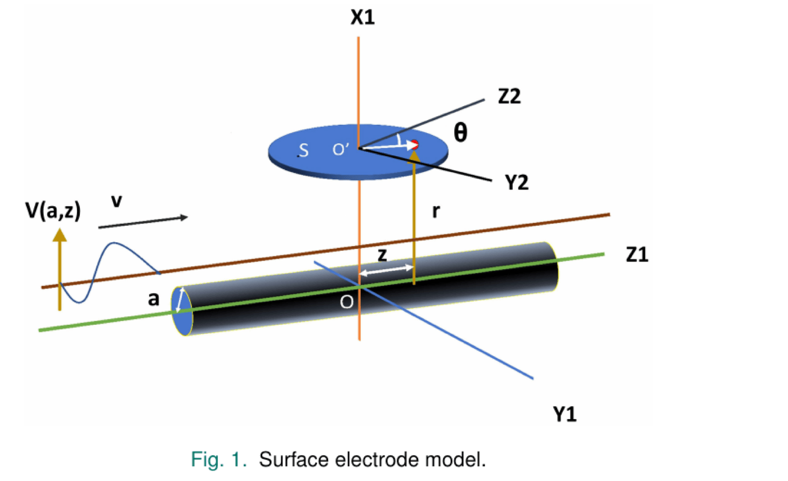
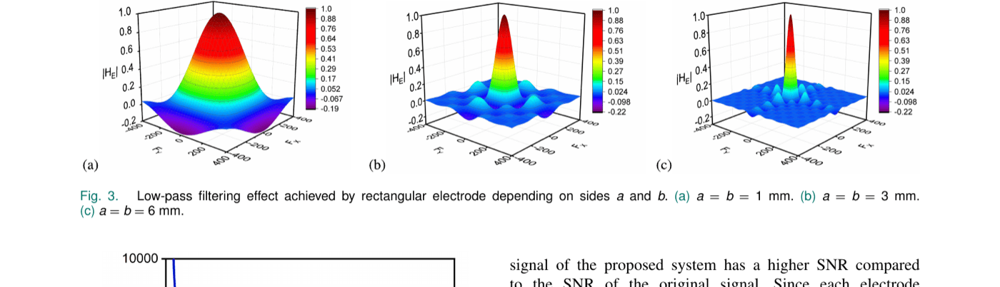
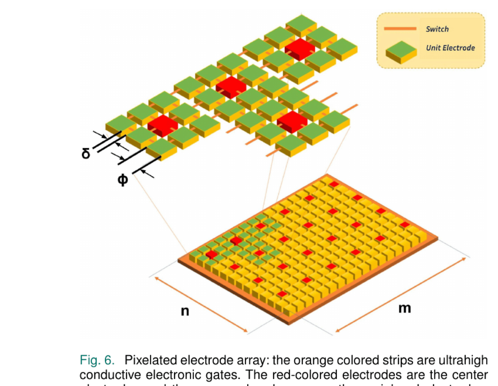
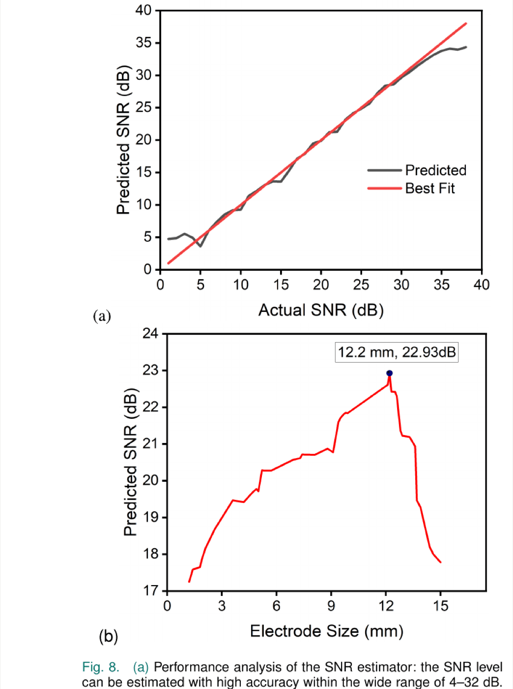
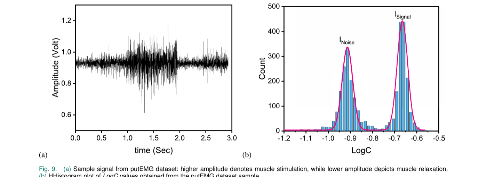

Surface electromyography (sEMG) is a non-invasive diagnostic tool for identifying muscle diseases, which is also utilized in portable smart devices to recognize body mass compositions. Human skin tissue composition varies from person to person. Therefore, the strength of muscle stimulation that reaches the skin surface varies with skin formation, resulting in a variation of signal-to-noise ratio (SNR). Electrodes used in sEMG have inherent filtering capabilities and the cutoff frequencies depend on the dimension of the electrodes. In this article, we propose a novel electrode array composed of tiny electrodes, mimicking the arrangement in high-density sEMG, that can modulate electrode size and leverage the natural filtering property of electrodes to maximize the SNR. The arrangement is similar to the arrangement of image pixels on a digital screen and hence called “pixelated.” The proposed scheme is very adaptive to varied skin composition as well as body location and hence behaves like an intelligent agent. We used a statistical SNR prediction algorithm, which validated the proposed idea. While determining the ideal electrode layout, the suggested concept significantly reduces the signal sample duration and can avoid additional computational overhead once the optimal arrangement is identified. Moreover, it offers a substantial advantage over traditional signal processing techniques, which need constant processing to filter out noise and improve the intelligent signal with digital filters and transceiver amplifiers. Because of truncated processing cost, the proposed array is suitable for wearable devices driven with low-power embedded microcontrollers, where high computational requirement often proves to be prohibitive.
Electrodes act as an inherent low-pass spatial filter on the EMG signal picked up from the muscle, and the cutoff frequency of that filter depends on electrode size: larger electrodes suppress more noise but also discard more signal detail. Because skin and tissue composition — and therefore the ideal trade-off — varies from person to person and site to site, a single fixed electrode size can’t be optimal for everyone.

Modeling circular and rectangular electrodes as spatial low-pass filters (via their impulse and transfer functions) shows that increasing electrode side length lowers the cutoff frequency and shrinks the electrode’s bandwidth — rectangular electrodes were chosen over circular ones for better noise suppression at low inter-electrode distance.

Rather than fabricate several fixed electrode sizes, the proposed array tiles many micrometer-scale unit electrodes and links neighboring pixels with ultrahigh-conductivity electronic switches. Turning switches on or off electronically grows or shrinks the effective electrode size — and with it, the cutoff frequency — without any physical reconfiguration.

A short calibration phase finds each subject’s optimal setting: starting with all switches off (each pixel acting alone), the controller iteratively connects more neighboring pixels into an n×n square, estimates the resulting SNR at each step using the statistical estimator described below, and stops once SNR has stopped improving over the last several iterations — the best setting found is then held fixed, requiring no further computation.
To judge each candidate electrode size without a ground-truth reference, the signal is split into short epochs, a normalized sum-of-squares series is computed, and a histogram of its log is built. This histogram reliably shows two peaks — one corresponding to background noise, one to genuine EMG signal — from which an SNR estimate in dB is derived directly.
Tested against synthetic EMG signals with known ground-truth SNR, the estimator tracks the true value closely across a wide 4–32 dB range. Sweeping electrode size on a fixed signal traces out a clear SNR peak — in this example, 22.93 dB at an electrode length of 12.2 mm — confirming the assumption that SNR rises with electrode size up to a point, then falls as the electrode becomes so large it starts rejecting genuine signal content along with the noise.

Applying the full pipeline to real hand-gesture EMG recordings from the public putEMG dataset (44 subjects) reproduces the same two-peak noise/signal histogram structure seen in the synthetic validation, confirming the estimator generalizes to real signals. Running the calibration procedure across seven putEMG samples finds a different optimal electrode length — and a correspondingly different number of connected pixels — for each:

| Best Achievable SNR (dB) | Electrode Length (mm) | Connected Pixels (per side) |
|---|---|---|
| 22.8 | 12.1 | 121 |
| 23.2 | 11.6 | 116 |
| 21.1 | 12.3 | 123 |
| 20.3 | 10.9 | 109 |
| 22.6 | 9.7 | 97 |
| 20.7 | 9.6 | 96 |
| 21.2 | 11.5 | 115 |
Benchmarked against a traditional fixed square electrode on idle hand-gesture data from six putEMG subjects, the pixelated array’s per-subject optimal setting improves SNR substantially and consistently — by 20.4% to 71.41% depending on the subject’s own optimal configuration:
| Fixed Square Electrode SNR (dB) | SNR After Pixelated Array (dB) |
|---|---|
| 13.36 | 22.93 |
| 14.92 | 19.66 |
| 16.86 | 20.47 |
| 15.23 | 23.24 |
| 14.44 | 21.86 |
| 16.78 | 20.21 |
Direct comparison with other published sEMG electrode arrays is difficult since measurement sites, datasets, and objectives differ, but for context: a stretchable 4×4 PEDOT:PSS electrode array (Velasco-Bosom et al.) reported a peak SNR of 15.6 dB during finger movement, and a stretchable sEMG array (Kim et al.) reported 9.18–20.77 dB depending on attachment method — both studies prioritize spatial resolution, whereas this work is tailored specifically to SNR optimization.
This article presents an algorithm for optimizing the SNR of sEMG signals via a simulated intelligent pixelated electrode array, evaluated on the putEMG hand-gesture dataset. The proposed arrangement enables precise, stable measurement of the effective electrode length required for each subject, and the SNR estimator performs well within its validated 4–32 dB operating range. Because the optimal switch configuration only needs to be found once per subject during calibration and then held fixed, the approach avoids the continuous digital-filtering overhead of traditional noise-reduction methods, making it well suited to low-power wearable EMG devices. Practical implementation — including fabrication of the ultralow-resistivity switch fabric, e.g. via graphene, carbon nanotube, or MEMS-based switches — is left to future work, along with extending the scheme beyond sEMG to related biosignals such as EEG and ECG.
@article{chowdhury2024pixelated,
title = {A Simulated Intelligent Pixelated Electrode Array for
Surface Electromyography Sensors},
author = {Chowdhury, Sakib and Sikder, Dipayon Kumar and Roy, Apratim},
journal = {IEEE Sensors Journal},
volume = {24},
number = {4},
pages = {5142--5150},
year = {2024},
doi = {10.1109/JSEN.2023.3345729}
}